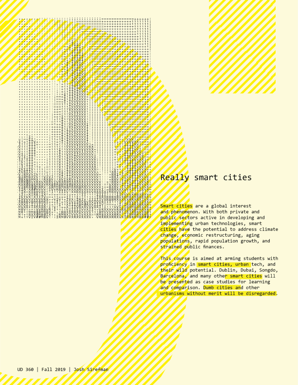

Smart cities are a global interest and phenomenon. With both private and public sectors active in developing and implementing urban technologies, smart cities have the potential to address climate change, economic restructuring, aging populations, rapid population growth, and strained public finances.
This course is aimed at arming students with proficiency in smart cities, urban tech, and hteir wild potential. Dublin, Dubai, Songdo, Barcelona, and many other smart cities will be presented as case studies for learning and comparison. Dumb cities and other urbanisms without merit will be disregarded.